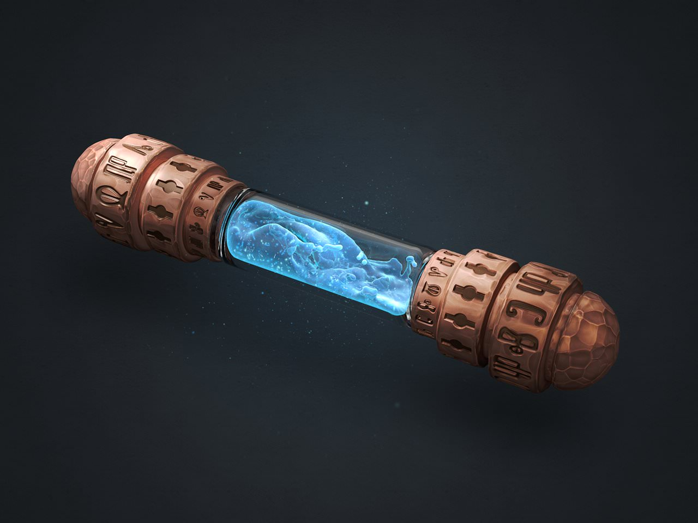

Homepage
Thor's Might Recipe

Description
A churning mass of a deep blue liquid, shot through with white streaks that remind of lightning. The container which holds this potion always shakes and quivers slightly. After drinking this potion, upon hitting a target with a melee weapon attack lets out thunderous crack that deals an extra 1d6 thunder damage for 1 minute, there is no limit to how often it can be used within this timespan.
Ingredients
- Air Elemental Whisp
- Cloud Giant's Fingernail
- Lightning Moss
- Singing Nettle
- 1 vial of ale
Instructions
- Crush the Cloud Giant's Fingernail into a fine powder
- Grind the Singing Nettle into a fine paste
- Mix the Singing Nettle and Cloud Giant's Fingernail the ale
- Charge the mixture with the Lightning Moss
- Inhale the Air Elemental Whisp
- Blow the Air Elemental Whisp into the mixture
- Seal the potion with binding runes